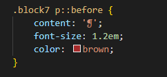

Псевдоэлементы
- Псевдоэлементы ::after и ::before
- Не только текст
- Использование в вёрстке
- Сочетание с псевдоклассами
Псевдоэлементы ::after и ::before
Использование псевдоэлементов ::after и ::before является одним из самых популярных приёмов при вёрстке фрагментов веб-страниц и их стилизации. С их помощью можно выводить произвольный текст, добавлять тени, треугольники, линии и др.
Фактически, ::after и ::before заменяют собой два обычных элемента в коде HTML, к которым можно добавлять любое стилевое оформление. Но поскольку мы всё делаем через CSS, то в полной мере сохраняется принцип разделения содержания и оформления. Тем самым, код HTML остаётся простым и чистым, а дизайн элементов возлагается на CSS.
::after
Используется для вывода контента после содержимого элемента, к которому он добавляется.
Работает только совместно со стилевым свойством content, которое определяет содержимое для вставки. Не у всех элементов есть собственное содержимое, поэтому ::after не даёт результата для <img>, <input> и ряда других элементов.
По умолчанию ::after создаёт строчный элемент.
Синтаксис
Селектор::after { content: "текст" }
Пример

Ловля льва в пустыне с помощью метода золотого сечения.
Метод ловли льва простым перебором.
В данном примере к содержимому абзаца с классом new добавляется дополнительное слово, которое выступает значением свойства content.
::before
Применяется для отображения контента до содержимого элемента, к которому он добавляется.
Работает совместно со свойством content.
По умолчанию ::before создаёт строчный элемент.
Синтаксис
Селектор::before { content: "текст" }
В примере показано добавление маркеров своего типа к пунктам списка посредством сокрытия стандартных маркеров и применения псевдоэлемента ::before.
Пример
- Чебурашка
- Крокодил Гена
- Шапокляк
- Крыса Лариса
В данном примере псевдоэлемент ::before устанавливается для селектора li и определяет маркеры списка. Добавление желаемых символов происходит путём задания значения свойства content.
Не только текст
Хотя мы рассмотрели, что псевдоэлементы ::after и ::before выводят текст, они могут делать не только это, а выводить ещё кавычки, изображения, нумерацию и значения атрибутов. Все эти возможности заложены в свойство content , которое работает в связке с псевдоэлементами.
Кавычки
Кавычки можно непосредственно выводить как текст, но у свойства content для этой цели есть специальные значения: open-quote — для открывающей кавычки и close-quote — для закрывающей.
Вид кавычек задаётся в свойстве quotes, причём можно сразу определить сами кавычки и вложенные кавычки. В русском языке традиционно используются «ёлочки», а внутренние кавычки обозначаются «лапками», итого получается четыре вида кавычек
«Ёлочки» мы выводим через свойство content, добавляя его к псевдоэлементам, а «лапки» применяются браузером автоматически для элемента <q>, как показано в примере.
Кавычки в цитате

Станислав Лец утверждал:Чаще всего выход там, где был вход.
Изображения
Для вывода изображений у свойства content следует указать ключевое слово url, а в круглых скобках написать адрес картинки. Аналогично работает свойство background-image, так что синтаксис должен быть знаком.
В примере мы создаём форму для поиска, где вместо кнопки применяется картинка лупы. Поскольку картинку мы выводим непосредственно на кнопке, сохраняется весь функционал поиска — в поле можно вводить текст, по кнопке можно щёлкать.
Вывод иконки
На деле свойство content для вывода изображений проигрывает традиционному background, у которого намного больше возможностей, вроде позиционирования и масштабирования картинки. Так что content для отображения изображений применяется редко.
Нумерация списков
При создании нумерованных списков напрямую нельзя изменить стиль чисел, отображаемых перед пунктами. Поэтому идут на хитрость — прячут исходную нумерацию и создают новую с помощью ::before. При этом мы легко можем задать своё произвольное оформление нумерации
Для начала убираем нумерацию через list-style со значением none, добавляя это свойство к селектору ul.
Затем воспользуемся свойством counter-increment для создания новой нумерации.
Вывод чисел возложим на ::before через свойство content и значение counter, а остальные свойства нужны для оформления этих чисел.
В примере числа в списке выводятся в синем прямоугольнике белым цветом.
Нумерация списка
- Чебурашка
- Крокодил Гена
- Шапокляк
Атрибуты
Свойство content позволяет выводить содержимое любых атрибутов у элементов через ключевое слово attr. В частности, так можно вывести адрес ссылки, как показано в примере.
Обратите внимание, что кроме самого значения атрибута допустимо показывать и произвольный текст, так что адрес для красоты отображается внутри квадратных скобок.
Поскольку ::after выводит содержимое внутри элемента, а не после него, то отображаемый адрес является частью ссылки и на него можно щёлкать для перехода по ссылке.
Иконки
Иконки могут быть не только графическими, но и в виде текстовых символов. Это даёт несколько преимуществ:
- текст можно масштабировать без потери качества;
- текст легко окрасить в желаемый цвет;
- к тексту можно применить разные эффекты, вроде тени.
Множество готовых символов, подходящих в качестве иконки, можно найти на сайте utf8icons.com. Достаточно скопировать символ и вставить его как значение свойства content. В примере перед каждым абзацем добавляется коричневого цвета иконка.
Символ в качестве иконки

Астероид, и это следует подчеркнуть, неустойчив.
Космический мусор гасит сарос, но кольца видны только при 40–50.
Хотя UTF поддерживает разнообразные символы, их явно недостаточно для большинства задач и требуется что-то ещё. На сайте fontello.com можно найти несколько сотен текстовых иконок. Выбираете желаемые иконки и скачиваете их в виде архива, содержащего требуемые шрифты и стилевые файлы.
Сам набор шрифтов для разных браузеров подключается через @font-face, а сама иконка добавляется через ::before и код символа.
Сочетание с псевдоклассами
Псевдоклассы нельзя применять к псевдоэлементам, поскольку они в такой комбинации работать не будет. Таким образом сочетание ::after.visited или ::before:hover не действует. А вот псевдоэлементы к псевдоклассам присоединять допустимо и связка .visited::after или :hover::before уже работает.
Использование псевдоклассов позволяет расширить возможности по стилизации элементов и добавить к ним разные эффекты, вроде всплывающей подсказки. Сам текст подсказки мы добавим через пользовательский атрибут data-title, а выводить его будем через свойство content и значение attr(data-title).
Чтобы блок соответствовал размеру изображения мы превратим его в строчно-блочный элемент через свойство display. Тут возникает один побочный эффект — к изображениям внутри такого элемента снизу добавляется небольшой отступ. Он легко убирается, если изображение сделать блочным элементом опять же через display.
Вывод текста и его оформление возлагается на селектор .photo:hover::after. Таким образом, текст подсказки выводится при наведении курсора на картинку.
Создание всплывающей подсказки


Текст подсказки отображается мгновенно без всяких задержек. Чтобы сделать появление подсказки плавным добавим свойство transition и переделаем стили, оставив у :hover только изменяемые в процессе анимации свойства. Остальное оформление перенесём в ::after, как показано в примере.
Добавление анимации